Home
Liturgy
Roman Missal
Order of Mass
10. Then the reader goes to the ambo and reads the First Reading, while all sit and listen.
To indicate the end of the reading, the reader acclaims:
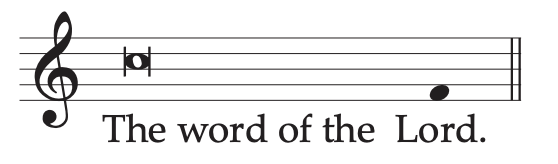
The word of the Lord.
All reply:
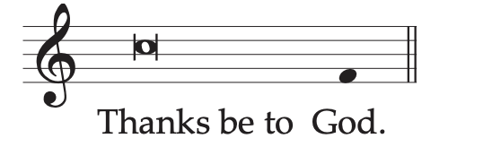
Thanks be to God.
11. The psalmist or cantor sings or says the Psalm, with the people making the response.
12. After this, if there is to be a Second Reading, a reader reads it from the ambo, as above.
To indicate the end of the reading, the reader acclaims:
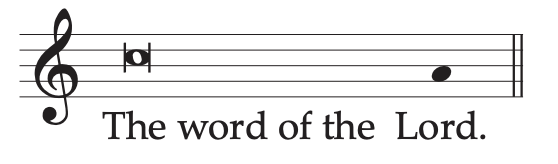
The word of the Lord.
All reply:
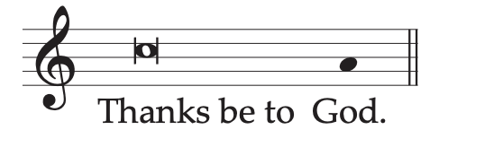
Thanks be to God.
13. There follows the Alleluia or another chant laid down by the rubrics, as the liturgical time requires.
14. Meanwhile, if incense is used, the Priest puts some into the thurible. After this, the Deacon who is to proclaim the Gospel, bowing profoundly before the Priest, asks for the blessing, saying in a low voice:
Your blessing, Father.
The Priest says in a low voice:
May the Lord be in your heart and on your lips,
that you may proclaim his Gospel worthily and well,
in the name of the Father, and of the Son, ✠ and of the Holy Spirit.
The Deacon signs himself with the Sign of the Cross and replies:
Amen.
If, however, a Deacon is not present, the Priest, bowing before the altar, says quietly:
Cleanse my heart and my lips, almighty God,
that I may worthily proclaim your holy Gospel.
15. The Deacon, or the Priest, then proceeds to the ambo, accompanied, if appropriate, by ministers with incense and candles. There he says:
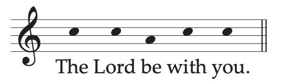
The Lord be with you.
The people reply:
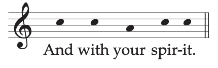
And with your spirit.
The Deacon, or the Priest:
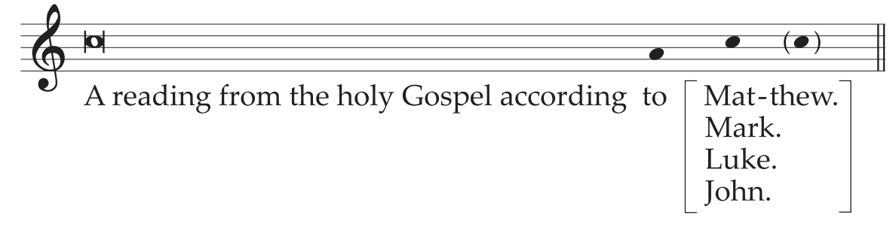
A reading from the holy Gospel according to N.
and, at the same time, he makes the Sign of the Cross on the book and on his forehead, lips, and breast.
The people acclaim:
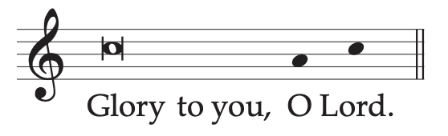
Glory to you, O Lord.
Then the Deacon, or the Priest, incenses the book, if incense is used, and proclaims the Gospel.
16. At the end of the Gospel, the Deacon, or the Priest, acclaims:
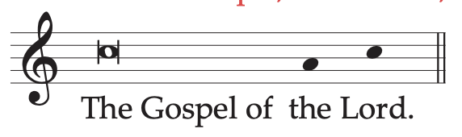
The Gospel of the Lord.
All reply:
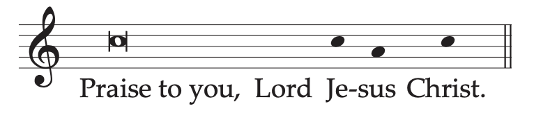
Praise to you, Lord Jesus Christ.
Then he kisses the book, saying quietly:
Through the words of the Gospel
may our sins be wiped away.
17. Then follows the Homily, which is to be preached by a Priest or Deacon on all Sundays and Holydays of Obligation; on other days, it is recommended.
18. At the end of the Homily, the Symbol or Profession of Faith or Creed, when prescribed, is either sung or said:
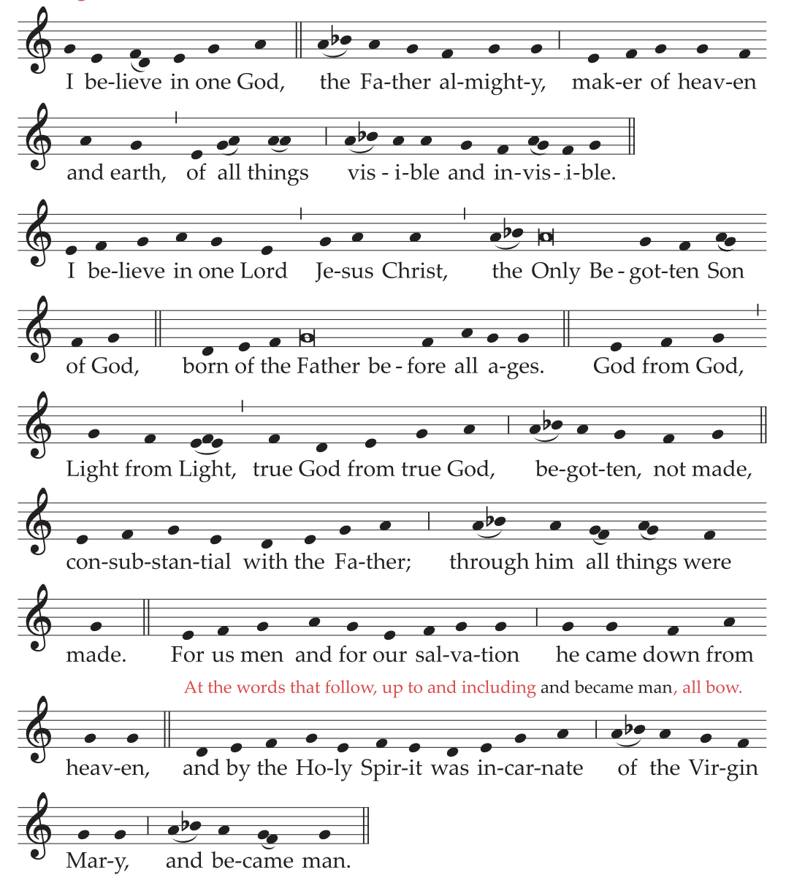
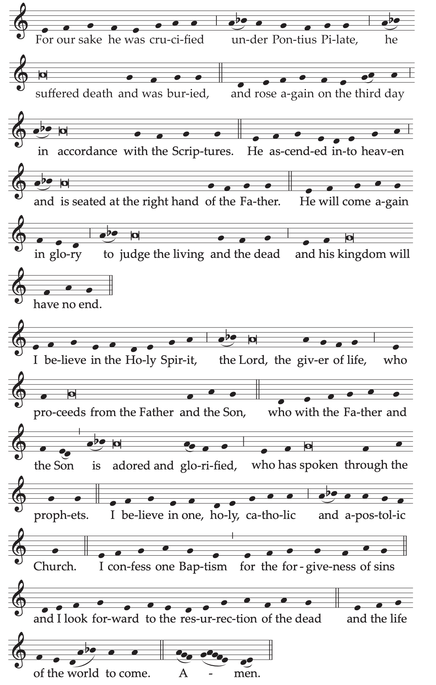
An alternate musical setting of the Creed may be found in Appendix I here.
I believe in one God,
the Father almighty,
maker of heaven and earth,
of all things visible and invisible.
I believe in one Lord Jesus Christ,
the Only Begotten Son of God,
born of the Father before all ages.
God from God, Light from Light,
true God from true God,
begotten, not made, consubstantial with the Father;
through him all things were made.
For us men and for our salvation
he came down from heaven,
At the words that follow, up to and including and became man, all bow.
and by the Holy Spirit was incarnate of the Virgin Mary,
and became man.
For our sake he was crucified under Pontius Pilate,
he suffered death and was buried,
and rose again on the third day
in accordance with the Scriptures.
He ascended into heaven
and is seated at the right hand of the Father.
He will come again in glory
to judge the living and the dead
and his kingdom will have no end.
I believe in the Holy Spirit, the Lord, the giver of life,
who proceeds from the Father and the Son,
who with the Father and the Son is adored and glorified,
who has spoken through the prophets.
I believe in one, holy, catholic and apostolic Church.
I confess one Baptism for the forgiveness of sins
and I look forward to the resurrection of the dead
and the life of the world to come. Amen.
19. Instead of the Niceno-Constantinopolitan Creed, especially during Lent and Easter Time, the baptismal Symbol of the Roman Church, known as the Apostles’ Creed, may be used.
I believe in God,
the Father almighty,
Creator of heaven and earth,
and in Jesus Christ, his only Son, our Lord,
At the words that follow, up to and including the Virgin Mary, all bow.
who was conceived by the Holy Spirit,
born of the Virgin Mary,
suffered under Pontius Pilate,
was crucified, died and was buried;
he descended into hell;
on the third day he rose again from the dead;
he ascended into heaven,
and is seated at the right hand of God the Father almighty;
from there he will come to judge the living and the dead.
I believe in the Holy Spirit,
the holy catholic Church,
the communion of saints,
the forgiveness of sins,
the resurrection of the body,
and life everlasting. Amen.
20. Then follows the Universal Prayer, that is, the Prayer of the Faithful or Bidding Prayers.